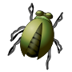

Besouros
Os coleópteros compõem uma ordem muito diversa de insetos, entre os quais
os mais populares são os besouros e as joaninhas. No entanto, essa ordem
compreende também escaravelhos, gorgulhos entre outros.
